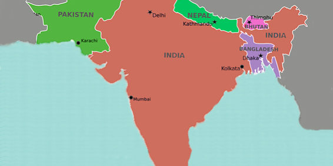

India is the largest country in South Asia, and is geographically at the centre of the region. Naturally, it is a dominant power in South Asian geopolitics. History is evidence that India has played an important role in the development of the region in all spheres. However, recent conflicts, particularly with China, have stalled this goal of regional development and hindered India's stronghold in its own backyard. It is said that history is an indication of what's to come. Let us look back in time then analyse the present to speculate about the future. India was one of the first Non-Communist countries to officially recognise the People’s Republic of China in 1949. It was 1954 when Chinese Premier Zhou Enlai and Indian Prime Minister Jawaharlal Nehru signed the Panscheel pact which became the bedrock of the Non-Aligned Movement, underlining the five principles of peaceful co-existence. The five principles of Panscheel were to have mutual respect for one another’s territorial integrity, non-aggression, non-interference in one another’s internal affairs, equality and working for each other’s benefits and finally peaceful co-existence. However, since then the two countries have had several territorial disputes and border clashes.

In a startling turn of events in January of 1959, Enlai proceeded to claim 40,000 sq miles of
Indian territory in the strategically valued regions of Ladakh and Northeast India. Following this,
there have been several meetings and attempts to settle the dispute concerning the boundary
dispute between the nations. However, no significant results have been achieved so far. In 1962,
Beijing launched an attack on India that led to the infamous Sino-Indian border war, with clashes
over the disputed Aksai Chin and border areas in Arunachal Pradesh leading to massive bloodshed
and destruction. On 21 April 1962, China finally resolved to declare a unilateral ceasefire and
withdrew its troops and positioned itself 20 kilometres behind the Line of Actual Control. Even after
this there have been several border clashes between the two regional superpowers such as one in
1967 at Nathu La in Sikkim where around 80 Indian and 400 Chinese soldiers were killed.
In 1959, the Dalai Lama escaped Tibet fearing for his life when the Tibetan uprising broke
out, and he sought refuge in India. He couldn’t go back as the CPC which controlled Tibet would not
issue a visa for him. This soured Indo-China relations even further. In June 2000, when the Karmapa
Lama fled China and joined the Dalai Lama in Dharamshala, Beijing warned that his asylum would
lead to violation of the Panscheel pact.
On the 13 th of January 2009, Indian Prime Minister Manmohan Singh visited China as bilateral
trade betweent the two nations surpassed $50 billion and China became India’s largest trading
partner. However, on 27 th August 2010, India cancelled defence exchanges with China due to the
tensions between the two nations.
The most recent developments in the conflict occurred in April of this year when another
major border standoff took place at the LAC in Ladakh. Diplomatic talks ensued to resolve the
standoff, but four days after the initial standoff, 20 Indian soldiers including a Colonel were
reportedly killed in a clash with Chinese troops in the Galwan Valley. Following this there were
fervent calls across India to boycott Chinese products. The Indian Railways cancelled a contract with
a Chinese firm and the Indian government has since banned 59 Chinese apps in India. According to
the Global Times, the banning of these apps had a huge impact on the Chinese economy, particularly
Tiktok's parent company ByteDance, which is set to lose $6 billion dollars.
Ever since the partition of India in 1947, diplomatic relations between India and Pakistan
have been very hostile. The two countries have been to war four times - in 1949, 1965, 1971 and
1999. Several terror attacks have been carried out by militant extremist groups allegedly funded and
backed by Pakistan, one of which is the catastrophe that occurred on the 26 th of November, 2008. On
that day, ten armed Pakistani men associated with Lakshar-e-Tayyiba, a terrorist organisation,
stormed various buildings in Bombay, attacked people on the streets and stormed hospitals with a
death toll of 164 people.
Furthermore, in February 2019, Pakistan based terrorist group Jaish-e-Mohammed carried
out a suicide car bomb attack in India administered Kashmir which killed over 40 members of India’s
paramilitary forces. India responded with airstrikes across the Line of Control which led to Pakistan
shooting down an Indian aircraft and capturing the pilot. This led to a sharp increase in tensions
between India and Pakistan. However, the tensions subsequently eased when Pakistan repatriated
the Indian pilot.
Pakistan is one of the biggest beneficiaries of China’s Belt and Road initiative, and it has
borrowed a lot of money from Beijing to overcome its financial crisis. Pakistan’s debt to China is
worth $6.56 billion. It owes more to China than to the International Monetary Fund. This could be a
contributing factor to the diplomatic support which Pakistan and China show each other in
international forums.
Sri Lanka and India have had good diplomatic relations over the years. Sri Lanka is one of
India’s largest trading partners among the SAARC countries, and in turn, India is Sri Lanka’s largest
trading partner globally. Trade between the two countries grew rapidly after the India-Sri Lanka Free
Trade Agreement came into force in 2000. This agreement allows duty free concessions to a wide
range of products being traded between these two countries.
The Cultural Cooperation Agreement signed by the two countries on 29 th November 1977
formed the basis of periodic cultural exchange programmes between the two countries. Sri Lanka
and India have a civil nuclear cooperation agreement which is Sri Lanka’s first nuclear partnership
with any nation.
In recent years, China has extended billions of dollars of loans to Sri Lanka for new
infrastructure development projects. Sri Lanka has also handed over the strategic port of
Hambantota to China on a 99-year lease which is expected to play a key role in China’s Belt and Road
initiative. This is detrimental to India’s strategic position in the Indian Ocean as it is being
surrounded by Chinese military installations.
India shares a special relationship with Bhutan. India provides budgetary support of
approximately one billion dollars to Bhutan - making it the largest recipient of Indian foreign aid.
Historically, India-Bhutan relations have been smooth and cooperative. There have hardly been any
instances of hostility between the two nations. India provides protection to Bhutan, however,
Bhutan is not a protectorate of India. In the current scenario of China exerting its soft power in the
South Asian region, Bhutan is among the countries backing India, though it remains to be seen how
helpful that is.
India and Nepal initiated their diplomatic ties with the 1950 Indo Nepal treaty of peace and
friendship, and secret letters exchanged by both governments. These asserted that neither
government shall tolerate a threat to the security of the other by a foreign aggressor. It also asserted
that both countries should alert each other of misunderstandings on their part so as to not hamper
the relationship between the two states.
Relations between the two countries was very cordial up till 2015 when Nepal promulgated
its new constitution which according to the minority communities of the Madhesis, the Janajatis and
the Tharus, marginalised them. These groups organised protests and a blockade of the Indo-Nepal
border and the Nepalese government accused India of supporting these insurgents. The Indian
government denied the accusations vehemently.
The Indo- Nepalese relations hit a new low when the Nepalese parliament passed a new
map of Nepal which includes Indian territory. There has been a heavy backlash on the Indian side but
no concrete action has yet been taken by the Indian government in this regard. China decided to
increase its funding of Nepal and improve its diplomatic ties with Nepal. Nepal’s allegiance seems to
have shifted from India towards China which is a threat to India’s strategic positions in the northern
and northeastern border regions.
If India and China go to war, the mutual damage will be unimaginable. Due to the fact that
both are nuclear states with huge militaries, there will be no winner in a prolonged conflict between
them. There is also a marked change in India's foreign policy - moving towards the western
hemisphere and prioritizing relationships with countries like the USA, France and the UK. South
Asian countries are starting to believe that India cannot promote regional cooperation and
development since their view is that India wants to assert its control in the region. Furthermore,
with these nations receiving aid from China, their allegiance is shifting towards it, thereby isolating
India in its own neighbourhood. Therefore, is it wise of India to let China further increase its
stronghold in South Asia, given its already close relationship with Pakistan? Shouldn't more emphasis
be put on regional strengthening rather than on strengthening ties with distant allies? Only time will
tell us the fate of South Asia.